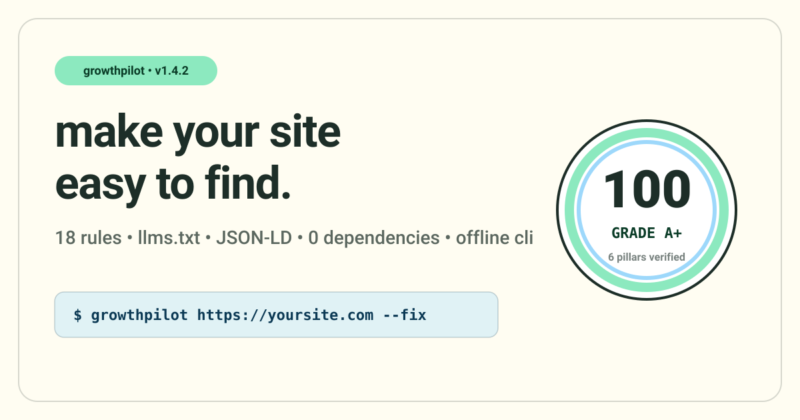

Turn any codebase or URL into 100/100 SEO, GEO & CRO.
Stop shipping invisible products. GrowthPilot audits any local repository or live production URL across
6 weighted pillars and 18 deterministic rules, catches client-bundle FAQ bugs, and generates
llms.txt, Schema.org, head tags, copy rewrites, and launch kits in seconds.
Why GrowthPilot Is Worth Adopting
Replace manual spreadsheets, generic AI prompts, and $299/month view-only SEO dashboards with deterministic local engineering.
| Capability | Monthly SEO Suites | Generic LLM Chat | GrowthPilot v1.4.0 |
|---|---|---|---|
| Deterministic 0–100 Grading | Vague health scores Opaque | Non-reproducible Drifts | 6 weighted pillars & 18 rules MKT001–MKT018 |
| Local Codebase + Live Crawl | Live URLs only (paid quota) | Manual copy-paste | Local AST/file scan + 7-subpage live crawler |
| Client JS Bundle FAQ Detection | Missed on client accordions | Blind to runtime chunks | Inspects Next.js chunks to catch hidden SSR FAQ bugs |
| AI Search / GEO Readiness | Rarely checks AI crawlers | Invents stale formats | Generates llms.txt, llms-full.txt & AI_BOTS rules |
| Deployable Artifacts & Attribution | Checklist warnings only | Generic placeholders | Writes 12 ready files + checks Plausible / PostHog / Umami hooks |
| Privacy, Cost & CI Integration | $99–$499/mo SaaS subscription | Sends IP to third parties | $0 MIT • 0 deps • SARIF 2.1.0 PR Gate |
Live Benchmark: funagigs.com Case Study
Verified against a real production two-sided marketplace. Inspect what GrowthPilot uncovered on a single live crawl — and the score after fixes.
53 / 100 — Grade D
- SSR BUG6 FAQ answers were embedded solely in client JS chunks, invisible to non-JS search & AI crawlers.
- SEO4 duplicate title suffixes found across
/features,/post-a-job,/contact, and/waitlist. - A11Y50 images missing descriptive
alttext plus duplicate"Funa Vault"keyword entries. - GEOMissing
/llms.txt,/llms-full.txt, and structuredFAQPageJSON-LD graph.

Tailored marketplace positioning switched playbooks automatically from CLI install templates to Escrow + Instant Hire + Mobile Money liquidity loops and Google Play ASO checklists.
Interactive GrowthPilot Web Studio
Test GrowthPilot's scoring engine, AI-slop filter, and GEO/Schema asset generator directly in your browser — 100% locally with zero API calls.
PAS FRAMEWORK
JTBD FRAMEWORK
DIRECT METRIC HERO
| Rule | Pillar | Severity | Pts | Check & Remediation |
|---|
Every Run Writes 12 Deploy-Ready Files
Click any artifact generated inside --output-dir to inspect what ships to your repository and stakeholders.
Frequently Asked Questions
Rendered directly in static HTML and paired 1:1 with FAQPage Schema.org JSON-LD so search and AI crawlers extract answers cleanly.
What does GrowthPilot generate?
Every audit generates 12 ready-to-deploy files in --output-dir: AUDIT_REPORT.md, growthpilot-report.html, HEAD_TAGS.html, SEO_SCHEMA.jsonld, llms.txt, llms-full.txt, robots.txt, sitemap.xml, manifest.webmanifest, LAUNCH_PLAYBOOK.md, PROGRAMMATIC_SEO.md, and growth-summary.json, plus optional SARIF 2.1.0 output.
Does GrowthPilot require an API key or upload my source code?
No. Local repository audits run 100% offline in pure Python 3.10+ standard library with zero third-party packages, zero API keys, and zero telemetry. Explicit live-URL scans fetch only the public target with a 10-second timeout and 2 MB cap.
How does the Next.js client-bundle FAQ inspector work?
During live URL scans, GrowthPilot inspects same-origin Next.js client chunks (/_next/static/chunks/app/page*.js) and flags an SSR Content Visibility Defect whenever FAQ answers exist inside hydrated JavaScript bundles without being present in initial server HTML.
Can AI coding agents run GrowthPilot directly?
Yes. Install the universal Agent Skill via npx skills add codesphere-u/growthpilot or connect the built-in stdio MCP server via growthpilot --mcp, exposing 6 native tools including audit_project, analyze_copy_cro, and apply_marketing_fixes.